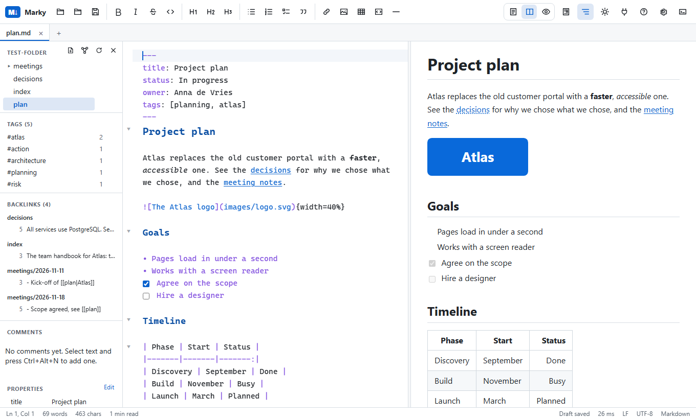
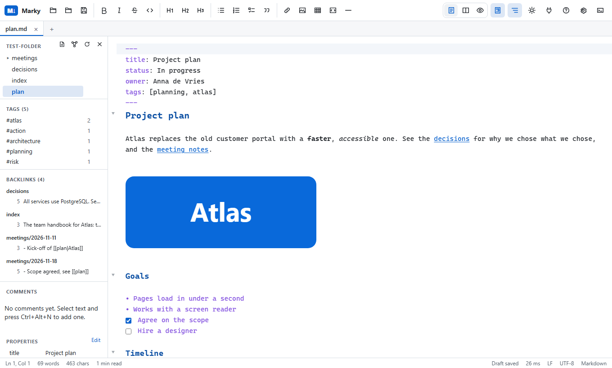
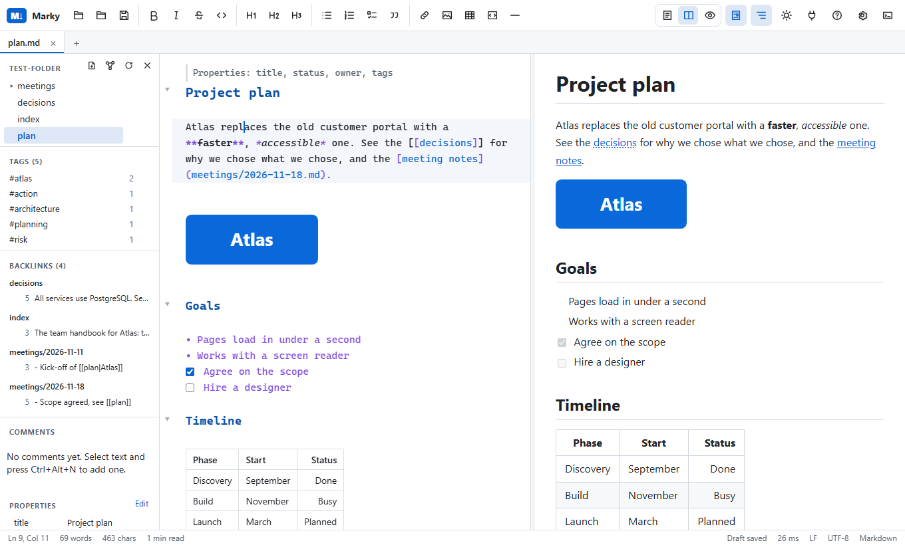

4. Editing views and focus
Three layouts
The three buttons on the right of the toolbar choose what you see:
| Layout | Shortcut | Use it for |
|---|---|---|
| Editor only | (the button) | Writing without distraction |
| Split view | Ctrl+\ | Writing with the result next to it (the editor and preview scroll together) |
| Preview only | Reading |
Drag the line between editor and preview to change their sizes. Double-click something in the preview to jump to its line in the text.
Three editing views
However you edit, the file stays plain Markdown. Pick the view in Settings › Editor › Editing view, or switch with the shortcuts:
Markdown source: the text exactly as typed, with colours for the Markdown symbols.

Live preview (Ctrl+Alt+L): the symbols are hidden except on the line you're editing. Headings show without #, bold without **, links as their text, bullets as • and task boxes you can click.

Seamless (Ctrl+Alt+M, or the page button): like a word processor. On top of live preview, pictures show as pictures, tables as tables, formulas and diagrams drawn, code in a quiet frame, and the properties folded to one line. Click anything, or move the cursor into it, and its Markdown comes back to edit.

With the Editor only layout, seamless view is a single document-like page.
Focus mode
Focus mode (F8) hides everything but the text, centred. Dim other paragraphs fades all but the one you're writing; Typewriter scrolling keeps the line you're writing in the middle of the screen (both in Settings › Editor). Esc or the Exit focus button leaves.

Keybindings
Settings › Editor › Keybindings: Standard, Vim (normal, insert and visual mode, :w saves) or Emacs (C-x C-s saves, C-a / C-e, C-k …).